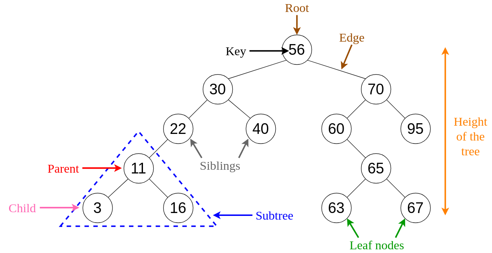

What is a Tree?
A tree is a hierarchical data structure that consists of nodes connected by edges. It is used to represent relationships, such as the structure of an organization or a file system, where one element is connected to multiple elements.

Structure of a Tree:
A tree is composed of nodes and edges. The key components are:
- Root: The topmost node in the tree. It does not have a parent.
- Child: A node directly connected to another node when moving away from the root.
- Parent: A node that has one or more child nodes.
- Leaf: A node that has no children.
Basic Concepts in Tree data structure
Example Tree Structure:
A
/ \
B C
/ \
D E
1. Nodes
Nodes are the basic units of a tree. Each node contains a value (or data) and may have connections to other nodes called edges. The relationships between nodes define the tree's structure. Types of nodes include:
- Parent Node: A node that has one or more child nodes connected to it.
Example: In the tree above,Ais the parent ofBandC. - Child Node: A node that is connected to a parent node above it.
Example:BandCare children ofA. - Sibling Nodes: Nodes that share the same parent.
Example:BandCare siblings because they both haveAas their parent. - Root Node: The topmost node of a tree, with no parent.
Example: In the example above,Ais the root node. - Leaf Node: A node with no children.
Example:DandEare leaf nodes.
2. Levels of a Tree
Levels in a tree refer to the depth or distance of a node from the root. The root node is at Level 0, its immediate children are at Level 1, and so on.
- Level 0: Contains the root node only.
- Level 1: Contains children of the root.
- Level 2: Contains children of nodes at Level 1, and so on.
Example: In the tree above, A is at Level 0, B and C are at Level 1, and D and E are at Level 2.
3. Subtrees
A subtree is any node in a tree along with all its descendants. A tree can be decomposed into multiple subtrees, each representing a smaller portion of the original structure.
- Example: In the tree above, the subtree rooted at
Bincludes nodesB,D, andE. - Usage: Subtrees are essential in recursive algorithms and hierarchical data representation.
4. Other Fundamental Concepts
- Height of a Tree: The longest path from the root to a leaf node.
Example: In the above tree, the height is 2 (fromAtoDorE). - Degree of a Node: The number of children a node has.
Example: The degree ofAis 2, while the degree ofDis 0. - Path: A sequence of nodes connected by edges.
Example: The path fromAtoDisA -> B -> D. - Edge: A connection between two nodes.
Example: The connection betweenAandBis an edge.
5.Tree Traversals
Traversals are methods of visiting each node in a tree:
- In-order Traversal: Left subtree -> Root -> Right subtree.
- Pre-order Traversal: Root -> Left subtree -> Right subtree.
- Post-order Traversal: Left subtree -> Right subtree -> Root.
- Level-order Traversal: Visit nodes level by level.
Example: Imagine a family tree, where each member represents a node, and the connections between them (parent-child relationships) represent the edges.
Understanding the Tree Process
A tree organizes data in a non-linear fashion, making it suitable for representing hierarchical relationships. Let’s break down how a tree works.
- Hierarchical Structure:
A tree is visualized as a branching structure starting from the root. Nodes can have multiple children, forming various levels of hierarchy. - Traversal:
Traversing a tree means visiting its nodes in a specific order, such as pre-order, in-order, or post-order.
Real-Time Examples of Trees
Trees are widely used in real-world applications where hierarchical or sorted data is needed. Some examples include:
- File Systems: File directories are organized as trees, where folders are parent nodes, and files or subfolders are child nodes.
- Databases: Trees like B-trees and binary search trees are used for indexing and data retrieval in databases.
- XML/HTML Parsing: Document Object Models (DOM) of XML or HTML are tree structures.
- Artificial Intelligence: Decision trees are used for machine learning and decision-making processes.
- Network Routing: Spanning trees are used in network routing algorithms to ensure data reaches its destination.
Key Operations of a Tree:
- Insertion: Adding a new node to the tree. This operation places the node in the appropriate position while maintaining the tree's structure.
- Deletion: Removing a node from the tree. This operation ensures the tree remains balanced and its structure is preserved.
-
Traversal: Visiting all the nodes of the tree in a specific order. Common traversal methods include:
- Pre-order: Visit the root, then left subtree, followed by the right subtree.
- In-order: Visit the left subtree, then root, and finally the right subtree.
- Post-order: Visit the left subtree, then the right subtree, and finally the root.
- Level-order: Visit nodes level by level, starting from the root.
- Search: Finding a specific node in the tree. The search operation traverses the tree to locate the desired node.
- Height: Determining the height of the tree, which is the number of edges on the longest path from the root to a leaf.
A Real-World Example
- Insertion: Add a new folder or file to a directory.
Example: Adding a new file to a folder in a file system. - Deletion: Remove a folder or file from a directory.
Example: Deleting a file from a file system. - Traversal: Navigating through the folders in a directory structure.
Example: Viewing all files and subfolders within a folder. - Search: Find a specific file or folder in a directory.
Example: Searching for a document in a file system. - Height: Measure the levels in a hierarchy.
Example: The depth of nested folders in a file system.
Implementation of Trees
A tree can be implemented in various ways, primarily using:
- Linked Nodes: A dynamic approach where each node contains data and pointers to its children, commonly used in binary trees and general trees.
- Usage: Flexible and widely used for hierarchical data structures.
- Drawbacks: Requires additional memory for pointers and is slower due to pointer-based traversal.
- Arrays: A contiguous memory structure where nodes are stored in an array, commonly used for complete binary trees or heaps.
- Usage: Ideal for compact storage and easy indexing of nodes.
- Drawbacks: Inefficient for sparse trees and dynamic operations like insertion and deletion.
Comparison of Tree Implementation: Linked Nodes vs Arrays
| Aspect | Tree Using Linked Nodes | Tree Using Arrays |
|---|---|---|
| Memory Allocation | Dynamic memory allocation for nodes as needed. | Fixed or dynamic array size depending on implementation. |
| Space Efficiency | Flexible but requires extra memory for pointers. | Efficient for complete trees but wastes space for sparse trees. |
| Traversal Complexity | Requires pointer-based navigation for traversal. | Index-based access allows easier traversal in some cases. |
| Insertion/Deletion | Efficient and dynamic without the need for resizing. | May require resizing or shifting of elements in arrays. |
| Random Access | Not supported; traversal needed to access specific nodes. | Supported for complete trees using indexing. |
| Cache Efficiency | Poorer due to scattered memory allocation. | Better due to contiguous memory allocation. |
| Flexibility | Highly flexible; can grow or shrink dynamically. | Limited flexibility; requires resizing for dynamic growth. |
| Implementation Complexity | More complex due to pointer management. | Simpler for complete trees but tricky for sparse trees. |
| Traversal Methods | Supports pre-order, in-order, post-order, and level-order traversal. | Supports level-order traversal directly through indexing. |
| Best Suited For | General-purpose trees, especially when structure varies or is dynamic. | Complete trees or heaps with predictable size. |
Types of Trees
Trees are categorized into various types based on their structure and properties:
- Binary Tree: A tree in which each node has at most two children, referred to as the left and right child.
- Usage: Commonly used in searching, sorting, and hierarchical data representation.
- Examples: Binary Search Tree (BST), Complete Binary Tree.
- Binary Search Tree (BST): A binary tree where each node's left subtree contains values less than the node, and the right subtree contains values greater than the node.
- Usage: Efficiently supports operations like search, insert, and delete.
- Properties: All operations have an average-case time complexity of O(log n).
- AVL Tree: A self-balancing binary search tree where the height difference (balance factor) of left and right subtrees is at most 1.
- Usage: Ensures balanced structure for maintaining O(log n) time complexity.
- Drawbacks: Requires additional rotations for balancing during insertions and deletions.
- Heap: A specialized tree-based structure satisfying the heap property, where the parent node is either greater (max-heap) or smaller (min-heap) than its children.
- Usage: Used in priority queues and sorting algorithms like Heap Sort.
- Examples: Min-Heap, Max-Heap.
- Trie: A tree used to store dynamic sets or associative arrays where keys are strings, with each node representing a character.
- Usage: Commonly used in dictionaries, autocomplete systems, and IP routing.
- Drawbacks: Requires significant memory for nodes with sparse branching.
Comparison of Types of Trees
| Type | Key Properties | Best Suited For |
|---|---|---|
| Binary Tree | Each node has at most two children; no specific ordering of values. | General-purpose hierarchical data representation. |
| Binary Search Tree (BST) | Left subtree contains smaller values, right subtree contains larger values. | Efficient searching, insertion, and deletion operations. |
| AVL Tree | Self-balancing BST; height difference of left and right subtrees is at most 1. | Maintaining balanced structure for consistently fast operations. |
| Heap | Parent is greater (max-heap) or smaller (min-heap) than children. | Priority queues, heap sort, and scheduling algorithms. |
| Trie | Nodes represent characters of keys; supports efficient string operations. | Autocomplete systems, dictionaries, and routing tables. |
Binary Trees
A binary tree is a type of tree data structure where each node has at most two children, referred to as the left child and the right child. Binary trees are the foundation of various specialized tree structures, offering efficient solutions for searching, sorting, and hierarchical data representation.

- Full Binary Tree:
A binary tree in which every node has either 0 or 2 children.- Usage: Useful in certain algorithms where every node must have two children, such as expression trees.
- Properties: If the tree has `n` internal nodes, it will have `n + 1` leaves.
- Advantages: Provides structural predictability and is easy to traverse.
- Disadvantages: Requires nodes to be strictly organized, limiting flexibility.
- Complete Binary Tree:
A binary tree in which all levels are fully filled except possibly the last, and the last level has all nodes as left as possible.- Usage: Used in heap-based algorithms like priority queues.
- Properties: Efficient memory usage with no gaps in the structure.
- Advantages: Ensures near-optimal height for operations.
- Disadvantages: Maintaining completeness during insertions can be challenging.
- Perfect Binary Tree:
A binary tree where all interior nodes have two children, and all leaves are at the same level.- Usage: Ideal for algorithms that rely on balanced tree structures like divide and conquer.
- Properties: A perfect binary tree with `h` levels has `2^h - 1` nodes.
- Advantages: Maximum efficiency in terms of depth and structure.
- Disadvantages: Difficult to maintain during dynamic insertions and deletions.
- Balanced Binary Tree:
A binary tree in which the height difference between the left and right subtrees of any node is at most 1.- Usage: Provides fast access times for operations like search, insert, and delete.
- Examples: AVL Tree, Red-Black Tree.
- Advantages: Ensures minimal height for a given number of nodes, optimizing time complexity.
- Disadvantages: Balancing the tree after every operation can be computationally expensive.
- Degenerate (or Pathological) Tree:
A binary tree where each parent node has only one child, forming a structure similar to a linked list.- Usage: Rarely desirable but may arise in unbalanced trees or during recursive data processes.
- Properties: Operates with linear height, reducing efficiency in operations.
- Advantages: Simple structure and easy to understand.
- Drawbacks: Results in inefficient operations with linear time complexity for searching and insertion.
Comparison of Types of Binary Trees
| Type | Key Properties | Best Suited For |
|---|---|---|
| Full Binary Tree | Each node has 0 or 2 children; no node has only 1 child. | Applications requiring all nodes to have exactly 0 or 2 children. |
| Complete Binary Tree | All levels are fully filled except possibly the last, which is filled from left to right. | Heap data structure and priority queues. |
| Perfect Binary Tree | All interior nodes have 2 children, and all leaves are at the same level. | Ideal balanced structures for algorithms like divide and conquer. |
| Balanced Binary Tree | Height difference between left and right subtrees of every node is ≤1. | Efficient operations with minimal height. |
| Degenerate Tree | Every node has only one child, forming a linear structure. | Edge cases in unbalanced trees; avoidable for efficient algorithms. |
Implementing a Binary Tree
A binary tree is a hierarchical data structure in which each node has at most two children, referred to as the left child and the right child. The topmost node is called the root, and the nodes at the bottommost level are called leaves. Binary trees are used in various applications like searching, sorting, and hierarchical data representation.
The main advantage of using binary trees is their ability to organize data in a structured and efficient manner, enabling quick access, insertion, and deletion operations.
Binary Tree Types
- Full Binary Tree: A binary tree in which every node other than the leaves has two children.
- Complete Binary Tree: A binary tree in which all levels, except possibly the last, are completely filled, and all nodes are as far left as possible.
- Perfect Binary Tree: A binary tree in which all interior nodes have two children, and all leaves are at the same level.
- Binary Search Tree (BST): A binary tree where the left subtree of a node contains only nodes with keys lesser than the node’s key, and the right subtree contains only nodes with keys greater than the node’s key.
Operations and their Algorithms:
1. Insert Operation:
a) Start at the root.
b) Compare the value to be inserted with the root node's value.
c) Recursively move to the left or right subtree based on comparison.
d) Insert the node at the appropriate position.
2. Search Operation:
a) Start at the root.
b) Compare the value to be searched with the current node's value.
c) Recursively search in the left or right subtree based on comparison.
d) If the value matches a node, return the node; otherwise, return null.
3. Traversal Operations:
a) Inorder Traversal: Traverse the left subtree, visit the node, and then traverse the right subtree.
b) Preorder Traversal: Visit the node, traverse the left subtree, and then traverse the right subtree.
c) Postorder Traversal: Traverse the left subtree, traverse the right subtree, and then visit the node.
Time Complexity: O(h) where h is the height of the tree.
Space Complexity: O(h) for recursive calls.
Implementation Code
// C program to implement a Binary Tree
#include <stdio.h>
#include <stdlib.h>
// Struct representing a node in the binary tree
typedef struct Node {
int data;
struct Node* left;
struct Node* right;
} Node;
// Function to create a new node
Node* createNode(int data) {
Node* newNode = (Node*)malloc(sizeof(Node));
newNode->data = data;
newNode->left = NULL;
newNode->right = NULL;
return newNode;
}
// Function to insert a node in a binary search tree
Node* insert(Node* root, int data) {
if (root == NULL) {
return createNode(data);
}
if (data < root->data) {
root->left = insert(root->left, data);
} else if (data > root->data) {
root->right = insert(root->right, data);
}
return root;
}
// Function for inorder traversal
void inorderTraversal(Node* root) {
if (root != NULL) {
inorderTraversal(root->left);
printf("%d ", root->data);
inorderTraversal(root->right);
}
}
// Function for preorder traversal
void preorderTraversal(Node* root) {
if (root != NULL) {
printf("%d ", root->data);
preorderTraversal(root->left);
preorderTraversal(root->right);
}
}
// Function for postorder traversal
void postorderTraversal(Node* root) {
if (root != NULL) {
postorderTraversal(root->left);
postorderTraversal(root->right);
printf("%d ", root->data);
}
}
// Driver program to test binary tree implementation
int main() {
Node* root = NULL;
root = insert(root, 50);
insert(root, 30);
insert(root, 70);
insert(root, 20);
insert(root, 40);
insert(root, 60);
insert(root, 80);
printf("Inorder traversal: ");
inorderTraversal(root);
printf("\n");
printf("Preorder traversal: ");
preorderTraversal(root);
printf("\n");
printf("Postorder traversal: ");
postorderTraversal(root);
printf("\n");
return 0;
}
Output
Inorder traversal: 20 30 40 50 60 70 80
Preorder traversal: 50 30 20 40 70 60 80
Postorder traversal: 20 40 30 60 80 70 50
Complexity Analysis
Time Complexity:
O(h) for insert and search operations, where h is the height of the tree. For balanced trees, h = O(log N).
Space Complexity:
O(N) for storing N nodes and O(h) for recursion in traversal operations.
Summary
In this implementation, we define a Node struct to represent each node in the binary tree. Operations like insertion, searching, and traversal are implemented using recursive algorithms. Traversal operations like inorder, preorder, and postorder allow exploring the tree in different ways.
This implementation covers the basic structure and operations of a binary tree. Using the binary tree, one can organize and access data efficiently for various applications.
Benefits of Using Binary Trees
- Efficient Searching: Searching in a binary search tree takes O(log N) time for balanced trees.
- Hierarchical Representation: Binary trees naturally represent hierarchical data such as file systems and organization charts.
- Versatile: Binary trees can be used to implement other data structures like heaps and balanced trees.
Binary Search Trees
A Binary Search Tree (BST) is a type of binary tree that maintains a specific order: for each node, all elements in the left subtree are less than the node, and all elements in the right subtree are greater than the node. This property allows efficient searching, insertion, and deletion operations.
- Unbalanced BST: A BST that does not maintain balanced height among its subtrees.
- Usage: Common in simple implementations without balancing mechanisms.
- Properties: Performance degrades to O(n) in the worst case when it degenerates to a linked list.
- Advantages: Easy to implement and understand.
- Disadvantages: Lack of balance results in inefficient operations in skewed trees.
- Balanced BST: A BST where the height difference between left and right subtrees is minimized.
- Usage: Used in applications requiring consistent performance for dynamic data.
- Examples: AVL Tree, Red-Black Tree.
- Advantages: Ensures logarithmic time complexity for search, insertion, and deletion.
- Disadvantages: Balancing after every operation adds overhead.
- AVL Tree: A self-balancing BST where the height difference (balance factor) of any node is at most 1.
- Usage: Ideal for dynamic datasets with frequent insertions and deletions.
- Properties: Guarantees O(log n) height.
- Advantages: Highly efficient for lookup and updates.
- Disadvantages: Complex implementation and balancing logic.
- Red-Black Tree: A self-balancing BST where nodes are either red or black, ensuring balanced height.
- Usage: Often used in libraries and frameworks, such as Java's TreeMap and C++'s std::map.
- Properties: Guarantees O(log n) time complexity for operations.
- Advantages: Simpler balancing mechanism compared to AVL trees.
- Disadvantages: Slower than AVL trees for strictly balanced scenarios.
- Splay Tree: A self-adjusting BST where recently accessed nodes are moved closer to the root.
- Usage: Optimized for scenarios with a high frequency of certain access patterns.
- Properties: Frequently accessed nodes are faster to reach.
- Advantages: Amortized O(log n) time complexity for operations.
- Disadvantages: Performance may degrade in uniformly distributed data.
Comparison of Types of Binary Search Trees
| Type | Key Properties | Best Suited For |
|---|---|---|
| Unbalanced BST | May degrade to O(n) performance in skewed cases. | Basic implementations where balancing is not required. |
| Balanced BST | Height difference between left and right subtrees is minimized. | Dynamic datasets with consistent performance needs. |
| AVL Tree | Balance factor of every node is at most 1. | Applications requiring frequent and efficient lookups. |
| Red-Black Tree | Nodes are colored red or black; ensures balanced height. | Widely used in libraries and frameworks. |
| Splay Tree | Recently accessed nodes are moved closer to the root. | Data with skewed access patterns and high locality. |
Implementing Different Types of Binary Search Trees
Binary Search Trees (BSTs) come in various types, each designed to optimize certain operations based on specific requirements. This section provides implementations of the following types of BSTs:
- Standard Binary Search Tree
- AVL Tree
- Red-Black Tree
1. Standard Binary Search Tree
A standard BST is a tree where the left child of a node contains values smaller than the node, and the right child contains values greater than the node. It does not guarantee balance, which can lead to degraded performance in the worst case.
// Implementation of a Standard Binary Search Tree in C
#include <stdio.h>
#include <stdlib.h>
// Node structure
struct Node {
int data;
struct Node* left;
struct Node* right;
};
// Function to create a new node
struct Node* createNode(int data) {
struct Node* node = (struct Node*)malloc(sizeof(struct Node));
node->data = data;
node->left = NULL;
node->right = NULL;
return node;
}
// Function to insert a node in a BST
struct Node* insert(struct Node* root, int data) {
if (root == NULL) return createNode(data);
if (data < root->data) root->left = insert(root->left, data);
else if (data > root->data) root->right = insert(root->right, data);
return root;
}
// Function to perform inorder traversal
void inorderTraversal(struct Node* root) {
if (root != NULL) {
inorderTraversal(root->left);
printf("%d ", root->data);
inorderTraversal(root->right);
}
}
// Main function to demonstrate the Standard BST
int main() {
struct Node* root = NULL;
root = insert(root, 50);
insert(root, 30);
insert(root, 70);
insert(root, 20);
insert(root, 40);
insert(root, 60);
insert(root, 80);
printf("Inorder Traversal of Standard BST: ");
inorderTraversal(root);
printf("\n");
return 0;
}
2. AVL Tree
An AVL tree is a self-balancing binary search tree where the difference in heights of left and right subtrees (balance factor) of any node is at most one. This ensures O(log N) time complexity for insertions, deletions, and lookups.
// Implementation of AVL Tree in C
#include <stdio.h>
#include <stdlib.h>
struct Node {
int data;
struct Node* left;
struct Node* right;
int height;
};
int max(int a, int b) { return (a > b) ? a : b; }
// Function to get the height of a node
int height(struct Node* node) {
return (node == NULL) ? 0 : node->height;
}
// Function to create a new node
struct Node* createNode(int data) {
struct Node* node = (struct Node*)malloc(sizeof(struct Node));
node->data = data;
node->left = NULL;
node->right = NULL;
node->height = 1;
return node;
}
// Right rotate
struct Node* rightRotate(struct Node* y) {
struct Node* x = y->left;
struct Node* T2 = x->right;
x->right = y;
y->left = T2;
y->height = max(height(y->left), height(y->right)) + 1;
x->height = max(height(x->left), height(x->right)) + 1;
return x;
}
// Left rotate
struct Node* leftRotate(struct Node* x) {
struct Node* y = x->right;
struct Node* T2 = y->left;
y->left = x;
x->right = T2;
x->height = max(height(x->left), height(x->right)) + 1;
y->height = max(height(y->left), height(y->right)) + 1;
return y;
}
// Get balance factor
int getBalance(struct Node* node) {
return (node == NULL) ? 0 : height(node->left) - height(node->right);
}
// Insert a node
struct Node* insert(struct Node* node, int data) {
if (node == NULL) return createNode(data);
if (data < node->data) node->left = insert(node->left, data);
else if (data > node->data) node->right = insert(node->right, data);
else return node;
node->height = 1 + max(height(node->left), height(node->right));
int balance = getBalance(node);
if (balance > 1 && data < node->left->data) return rightRotate(node);
if (balance < -1 && data > node->right->data) return leftRotate(node);
if (balance > 1 && data > node->left->data) {
node->left = leftRotate(node->left);
return rightRotate(node);
}
if (balance < -1 && data < node->right->data) {
node->right = rightRotate(node->right);
return leftRotate(node);
}
return node;
}
void inorderTraversal(struct Node* root) {
if (root != NULL) {
inorderTraversal(root->left);
printf("%d ", root->data);
inorderTraversal(root->right);
}
}
int main() {
struct Node* root = NULL;
root = insert(root, 10);
root = insert(root, 20);
root = insert(root, 30);
root = insert(root, 40);
root = insert(root, 50);
root = insert(root, 25);
printf("Inorder Traversal of AVL Tree: ");
inorderTraversal(root);
printf("\n");
return 0;
}
3. Red-Black Tree
Red-Black Trees are self-balancing binary search trees with the following properties:
- Each node is either red or black.
- The root is always black.
- Red nodes cannot have red children.
- Every path from a node to its descendant null pointers must have the same number of black nodes.
Due to complexity, Red-Black Tree implementation is usually provided in libraries (e.g., C++ STL's map and set).
Understanding AVL Trees
An AVL Tree is a type of self-balancing binary search tree where the difference between the heights of the left and right subtrees of any node (called the balance factor) is at most 1. Named after its inventors, Adelson-Velsky and Landis, AVL trees ensure that the tree remains balanced after every insertion or deletion operation, thereby maintaining efficient performance.
Key Concepts of AVL Trees
- Balance Factor: The difference between the height of the left and right subtrees. For an AVL tree, the balance factor must be -1, 0, or 1 for all nodes.
- Height of a Node: The number of edges on the longest path from the node to a leaf.
- Self-Balancing: AVL trees perform rotations to maintain the balance factor within the permissible range after insertions and deletions.
Types of Rotations in AVL Trees
When the balance factor of a node exceeds the range [-1, 1], rotations are used to rebalance the tree:
- Left Rotation (LL Rotation): Used when a node is inserted into the left subtree of the left child.
- Right Rotation (RR Rotation): Used when a node is inserted into the right subtree of the right child.
- Left-Right Rotation (LR Rotation): A combination of a left rotation followed by a right rotation.
- Right-Left Rotation (RL Rotation): A combination of a right rotation followed by a left rotation.
Balancing an AVL Tree
Balancing involves the following steps:
- Calculate the balance factor of each node during insertion or deletion.
- If the balance factor of a node becomes -2 or 2, determine the type of rotation needed based on the subtree where the imbalance occurs.
- Perform the appropriate rotation(s) to restore balance.
Understanding Balancing Factor in an AVL Tree
The balancing factor is a critical concept in AVL trees that ensures the tree remains balanced after every operation (insertion or deletion).
Definition:
The balancing factor for a node is defined as the difference between the heights of its left subtree and right subtree:
Balancing Factor (BF) = Height of Left Subtree - Height of Right Subtree- BF = -1, 0, or 1: The node is balanced.
- (BF < -1) or (BF > 1) : The node is unbalanced, requiring a rotation to restore balance.
Example:
Initial AVL Tree
30
/ \
20 40
/
10
Balancing Factors:
- Node 10: BF = 0 - 0 = 0
- Node 20: BF = 1 - 0 = 1
- Node 30: BF = 2 - 1 = 1
Insertion of Node 25
30
/ \
20 40
/ \
10 25
Updated Balancing Factors:
- Node 25: BF = 0 - 0 = 0
- Node 20: BF = 1 - 1 = 0
- Node 30: BF = 2 - 1 = 1
Unbalanced Example:
Insertion of Node 5
30
/ \
20 40
/
10
/
5
Updated Balancing Factors:
- Node 5: BF = 0 - 0 = 0
- Node 10: BF = 1 - 0 = 1
- Node 20: BF = 2 - 0 = 2 (Unbalanced)
- Node 30: BF = 3 - 1 = 2 (Unbalanced)
Restoring Balance:
To fix the imbalance at node 20, perform a Right Rotation:
Before Rotation:
30
/ \
20 40
/
10
/
5
After Right Rotation:
30
/ \
10 40
/ \
5 20
Updated Balancing Factors:
- Node 5: BF = 0 - 0 = 0
- Node 10: BF = 1 - 1 = 0
- Node 20: BF = 0 - 0 = 0
- Node 30: BF = 2 - 1 = 1
Summary:
The balancing factor ensures AVL trees maintain their O(log N) height. If the balancing factor for any node exceeds -1 or 1, rotations are used to restore balance. This makes AVL trees efficient for search, insertion, and deletion operations.
Implementation of an AVL Tree
// C program to implement an AVL Tree
#include <stdio.h>
#include <stdlib.h>
// Struct representing a node in the AVL tree
typedef struct Node {
int data;
struct Node* left;
struct Node* right;
int height;
} Node;
// Function to get the height of a node
int height(Node* node) {
return node == NULL ? 0 : node->height;
}
// Function to calculate the balance factor of a node
int getBalanceFactor(Node* node) {
return node == NULL ? 0 : height(node->left) - height(node->right);
}
// Function to create a new node
Node* createNode(int data) {
Node* newNode = (Node*)malloc(sizeof(Node));
newNode->data = data;
newNode->left = NULL;
newNode->right = NULL;
newNode->height = 1;
return newNode;
}
// Right rotation
Node* rightRotate(Node* y) {
Node* x = y->left;
Node* T2 = x->right;
x->right = y;
y->left = T2;
y->height = 1 + fmax(height(y->left), height(y->right));
x->height = 1 + fmax(height(x->left), height(x->right));
return x;
}
// Left rotation
Node* leftRotate(Node* x) {
Node* y = x->right;
Node* T2 = y->left;
y->left = x;
x->right = T2;
x->height = 1 + fmax(height(x->left), height(x->right));
y->height = 1 + fmax(height(y->left), height(y->right));
return y;
}
// Function to insert a node into the AVL tree
Node* insert(Node* node, int data) {
if (node == NULL) {
return createNode(data);
}
if (data < node->data) {
node->left = insert(node->left, data);
} else if (data > node->data) {
node->right = insert(node->right, data);
} else {
return node; // Duplicate keys are not allowed
}
// Update height of the current node
node->height = 1 + fmax(height(node->left), height(node->right));
// Calculate balance factor
int balance = getBalanceFactor(node);
// Perform rotations if necessary
if (balance > 1 && data < node->left->data) {
return rightRotate(node);
}
if (balance < -1 && data > node->right->data) {
return leftRotate(node);
}
if (balance > 1 && data > node->left->data) {
node->left = leftRotate(node->left);
return rightRotate(node);
}
if (balance < -1 && data < node->right->data) {
node->right = rightRotate(node->right);
return leftRotate(node);
}
return node;
}
// Function for inorder traversal
void inorderTraversal(Node* root) {
if (root != NULL) {
inorderTraversal(root->left);
printf("%d ", root->data);
inorderTraversal(root->right);
}
}
// Driver program to test AVL Tree implementation
int main() {
Node* root = NULL;
root = insert(root, 10);
root = insert(root, 20);
root = insert(root, 30);
root = insert(root, 40);
root = insert(root, 50);
root = insert(root, 25);
printf("Inorder traversal of the AVL Tree: ");
inorderTraversal(root);
printf("\n");
return 0;
}
Output
Inorder traversal of the AVL Tree: 10 20 25 30 40 50
Advantages of AVL Trees
- Search Efficiency: Ensures O(log N) time complexity for search operations.
- Guaranteed Balancing: The tree is always balanced, ensuring consistent performance.
- Dynamic Updates: Automatically adjusts balance after every insertion and deletion.
Limitations of AVL Trees
- Requires additional memory for storing the height of each node.
- Insertion and deletion operations may involve multiple rotations, making them relatively expensive compared to unbalanced binary search trees.
Heap Trees
A Heap is a specialized tree-based data structure that satisfies the heap property. It is widely used in algorithms such as priority queues and heap sort. A heap can be of two types:
Types of Heaps
- Max-Heap: In a max-heap, the value of each node is greater than or equal to the values of its children. The largest element is at the root.
- Min-Heap: In a min-heap, the value of each node is less than or equal to the values of its children. The smallest element is at the root.
Properties of a Heap
- Complete Binary Tree: A heap is always a complete binary tree, meaning all levels are completely filled except possibly the last, which is filled from left to right.
- Heap Property: Every parent node either has a value greater than or equal to (max-heap) or less than or equal to (min-heap) its children.
Heap Operations
1. Insertion
To insert an element into a heap:
- Add the element to the next available position in the tree (maintains completeness).
- Heapify upwards: Compare the added element with its parent and swap if it violates the heap property.
2. Deletion (Removing the Root)
To remove the root (maximum or minimum element):
- Replace the root with the last element of the heap.
- Remove the last element.
- Heapify downwards: Compare the new root with its children and swap with the larger child (max-heap) or smaller child (min-heap) to restore the heap property.
Example of a Max-Heap
Consider the following array representation of a max-heap:
Array: [50, 30, 40, 10, 5, 20, 30]
Its tree representation is:
50
/ \
30 40
/ \ / \
10 5 20 30
Insertion Example
Insert 60 into the heap:
- Add 60 at the next available position:
- Heapify upwards: Swap 60 with 30 and then with 50.
50
/ \
30 40
/ \ / \
10 5 20 30
/
60
60
/ \
50 40
/ \ / \
30 5 20 30
/
10
Deletion Example
Remove the root (60):
- Replace 60 with the last element (10):
- Heapify downwards: Swap 10 with 50.
- Continue heapifying: Swap 10 with 30.
10
/ \
50 40
/ \ / \
30 5 20 30
50
/ \
30 40
/ \ / \
10 5 20 30
Applications of Heaps
- Priority Queues: Efficiently retrieve the highest or lowest priority element.
- Heap Sort: A comparison-based sorting algorithm using a heap.
- Graph Algorithms: Used in Dijkstra's and Prim's algorithms for finding shortest paths and minimum spanning trees.
Comparison Between Different Types of Trees
The following table highlights the key differences between various types of trees, helping to understand their structure, properties, and applications:
| Tree Type | Definition | Key Properties | Common Applications |
|---|---|---|---|
| Binary Tree | A tree where each node has at most two children. |
|
|
| Binary Search Tree (BST) | A binary tree where the left child contains values smaller than the parent, and the right child contains values greater than the parent. |
|
|
| AVL Tree | A self-balancing binary search tree where the difference in heights of left and right subtrees of a node is at most 1. |
|
|
| Heap Tree | A binary tree-based structure where the parent node is either greater than or smaller than its children. |
|
|
| Red-Black Tree | A self-balancing binary search tree where each node has a color (red or black) to ensure balance. |
|
|
| B-Tree | A self-balancing search tree optimized for systems that read and write large blocks of data. |
|
|
| Trie | A tree used for storing strings where nodes represent prefixes of the strings. |
|
|
This table provides a consolidated view of tree types, making it easier to select the appropriate tree type for specific applications.